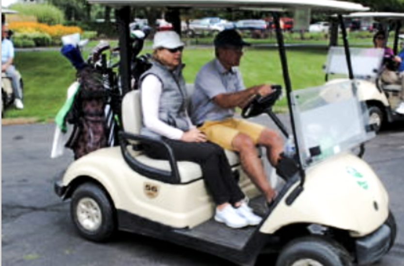
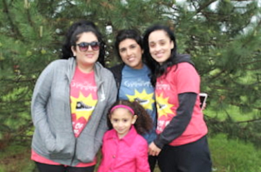
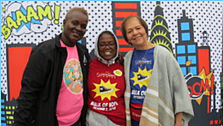
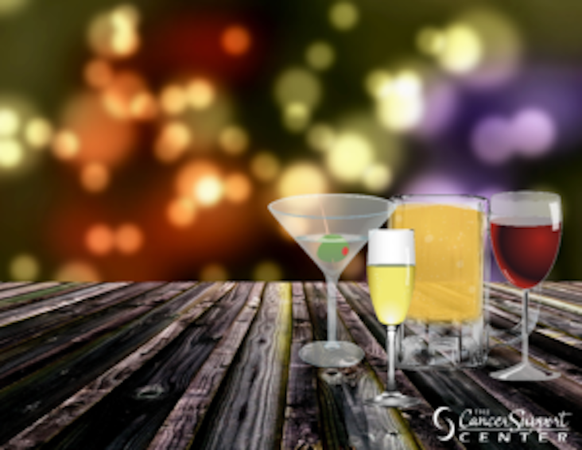
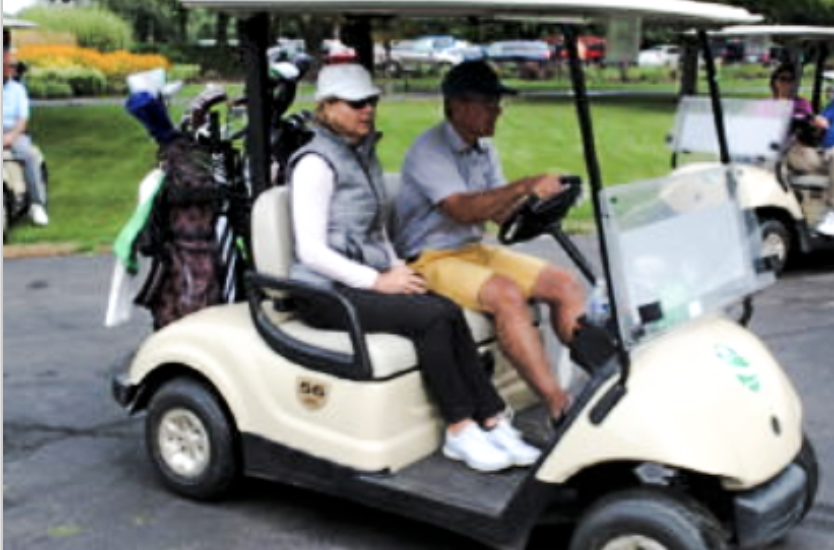
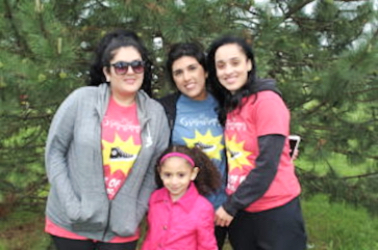
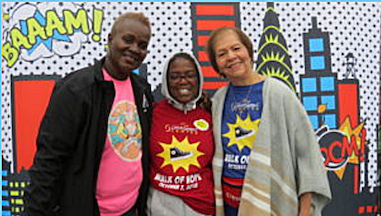
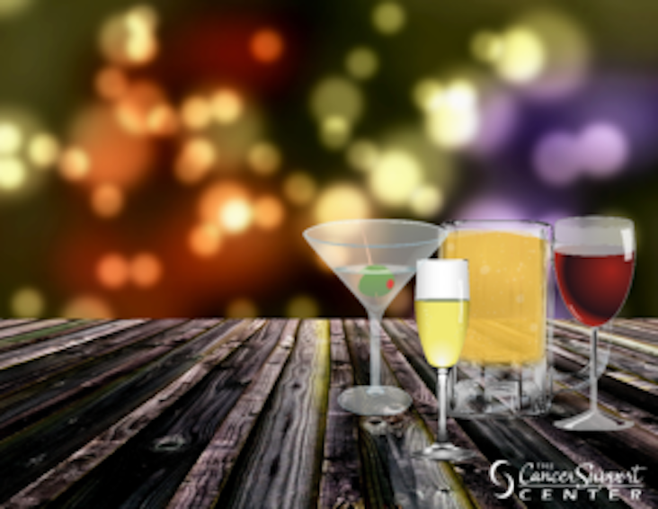

Special Events
Signature Events (Events Hosted by The Center)
 







Ancillary Board Events
(Events Hosted by The Center's Community Board of Homewood,
Community Board of Mokena, Women's Board, and Junior Board)
Virtual Fundraising Triathlon- September 23, 2020, October 1, 2020, and October 29, 2020
Christmas Tree, Wreath, and Garland Sale - Pre-Order: November 23, 2020,
Pick-Up/Delivery: November 28, 2020
- Junior Board TBA
Red Solo Cup- Community Board of Homewood TBA
Third-Party Events
(Events Hosted by Community Groups, Businesses, and
Organizations to Benefit The Center)
TBA- 9th Annual MNM RC Lt. Rich Kazik Memoriam Party